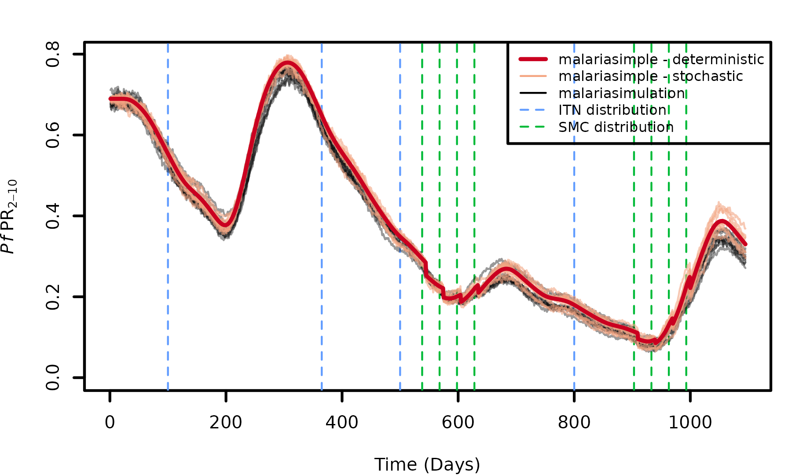

Comparison with malariasimulation
Source:vignettes/comparison_with_malariasimulation.Rmd
comparison_with_malariasimulation.Rmdmalariasimple is designed to resemble
malariasimulation as closely as possible. However, there
are certain scenarios (e.g. fast, low resolution runs; low
population/transmission scenarios) where malariasimple may
not provide a useful approximation. If in doubt, it is a good idea to
check your malariasimple simulation against an equivalent
malariasimulation run. In this vignette we will demonstrate
some examples of comparing equivalent simulations of
malariasimulation with both deterministic and stochastic
runs of malariasimple.
Note: malariasimple is designed to be familiar to users
of malariasimulation and hence many functions have the same
name. Hence, when both libraries are loaded in an R session
simultaneously, it becomes necessary to state which version of a
function you are calling by using the :: operator.
library(malariasimple)
set.seed(101)Example
Set up parameters
n_years <- 3
human_pop <- 5000
n_days <- n_years*365
init_EIR <- 50
num_sims <- 10 #Number of parallel stochastic simulations
##Seasonality parameters
g0 <- 0.28
g <- c(-0.3, -0.03, 0.17)
h <- c(-0.35, 0.32, -0.07)
##Define ITN parameters
itn_days <- c(100,365,500,800)
itn_cov <- c(0.1,0.4,0.5,0.1)
gamman <- 2.64*365
retention <- 5*365
##Define SMC parameters
smc_offsets <- c(-60, -30, 0, 30)
peak_cc <- get_peak_cc(g0, g, h)
smc_days <- rep(365 * seq(1, n_years - 1, by = 1), each = length(smc_offsets)) +
peak_cc +
rep(smc_offsets, 2)
smc_cov <- seq(0.3,0.6, length.out = length(smc_days))
smc_min_age <- 0.25*365
smc_max_age <- 5*365malariasimulation
##Set up malariasimulation parameters
n_dist <- length(itn_days)
dn0 <- rep(0.41, n_dist)
rn <- rep(0.56, n_dist)
rnm <- rep(0.24, n_dist)
gamman_vec <- rep(gamman, n_dist)
malsim_params <- malariasimulation::get_parameters(
overrides = list(
model_seasonality = TRUE,
g0 = g0,
g = g,
h = h,
clinical_incidence_rendering_min_ages = 0,
clinical_incidence_rendering_max_ages = 100 * 365,
prevalence_rendering_min_ages = 2 * 365,
prevalence_rendering_max_ages = 10 * 365,
human_population = human_pop
)
) |>
malariasimulation::set_drugs(list(malariasimulation::SP_AQ_params)) |>
malariasimulation::set_smc(
drug = 1,
timesteps = smc_days,
coverages = smc_cov,
min_ages = rep(smc_min_age, length(smc_days)),
max_ages = rep(smc_max_age, length(smc_days))
) |>
malariasimulation::set_bednets(
timesteps = itn_days,
coverages = itn_cov,
retention = retention,
dn0 = matrix(dn0, nrow = n_dist, ncol = 1),
rn = matrix(rn, nrow = n_dist, ncol = 1),
rnm = matrix(rnm, nrow = n_dist, ncol = 1),
gamman = gamman_vec
) |>
malariasimulation::set_equilibrium(init_EIR = init_EIR)
##Run malariasimulation
malsim <- malariasimulation::run_simulation_with_repetitions(
timesteps = n_days,
repetitions = num_sims,
parameters = malsim_params
)malariasimple - deterministic
##Set up deterministic malariasimple parameters
simple_det_params_1 <- malariasimple::get_parameters(
n_days = n_days,
prevalence_rendering_min_ages = 2 * 365,
prevalence_rendering_max_ages = 10 * 365,
human_pop = human_pop
) |>
malariasimple::set_seasonality(
g0 = g0,
g = g,
h = h
) |>
malariasimple::set_bednets(
days = itn_days,
coverages = itn_cov,
gamman = gamman,
retention = retention
) |>
malariasimple::set_smc(
min_age = smc_min_age,
max_age = smc_max_age,
days = smc_days,
coverages = smc_cov,
distribution_type = "random"
) |>
malariasimple::set_equilibrium(init_EIR = init_EIR)
##Run determistic malariasimple
simple_det_1 <- malariasimple::run_simulation(simple_det_params_1) |> as.data.frame()malariasimple - stochastic
##Set up stochsatic malariasimple parameters
simple_stoch_params_1 <- malariasimple::get_parameters(
n_days = n_days,
prevalence_rendering_min_ages = 2 * 365,
prevalence_rendering_max_ages = 10 * 365,
stochastic = TRUE,
human_pop = human_pop
) |>
malariasimple::set_seasonality(
g0 = g0,
g = g,
h = h
) |>
malariasimple::set_bednets(
days = itn_days,
coverages = itn_cov,
gamman = gamman,
retention = retention
) |>
malariasimple::set_smc(
min_age = smc_min_age,
max_age = smc_max_age,
days = smc_days,
coverages = smc_cov,
distribution_type = "random"
) |>
malariasimple::set_equilibrium(init_EIR = init_EIR)
##Run stochastic malariasimple
simple_stoch_1 <- malariasimple::run_simulation(simple_stoch_params_1, n_particles = num_sims) |>
make_2d()Plot
par(mar = c(4, 4, 2, 1), cex = 0.4) # Minimal margins # Adjust margins (bottom, left, top, right)
plot(NULL, xlim = c(0, max(n_days)), ylim = c(0, max(malsim$n_detect_lm_730_3650 / malsim$n_age_730_3650,
simple_stoch_1$n_detect_730_3650 / simple_stoch_1$n_730_3650,
simple_det_1$n_detect_730_3650 / simple_det_1$n_730_3650)),
xlab = "Time (Days)", ylab = expression(italic(Pf)~PR[2-10]))
abline(v = itn_days, col = "#619CFF", lty = 2, lwd = 0.7)
abline(v = smc_days, col = "#00BA38", lty = 2, lwd = 0.7)
for (i in unique(malsim$repetition)) {
lines(malsim$timestep[malsim$repetition == i],
malsim$n_detect_lm_730_3650[malsim$repetition == i] / malsim$n_age_730_3650[malsim$repetition == i],
col = rgb(0, 0, 0, alpha = 0.4), lty = 1, lwd = 0.7)
}
for (i in unique(simple_stoch_1$particle)) {
lines(simple_stoch_1$time[simple_stoch_1$particle == i],
simple_stoch_1$n_detect_730_3650[simple_stoch_1$particle == i] / simple_stoch_1$n_730_3650[simple_stoch_1$particle == i],
col = rgb(244/255, 165/255, 130/255, alpha = 0.6), lty = 1, lwd = 0.7)
}
lines(simple_det_1$time,
simple_det_1$n_detect_730_3650 / simple_det_1$n_730_3650,
col = "#CA0020", lwd = 1.5)
legend("topright", legend = c("malariasimple - deterministic", "malariasimple - stochastic", "malariasimulation", "ITN distribution", "SMC distribution"),
col = c("#CA0020", "#F4A582", "black", "#619CFF", "#00BA38"),
lty = c(1,1,1,2,2), lwd = c(1.5,0.7,0.7,0.7,0.7), bty = "o", cex = 0.8)